1、即时帮助差异
1.1 差异
在易语言中光标定位方法或按下快捷键F1，就可以打开易语言的即时帮助，会在“提示”栏显示当前方法的帮助信息。
通过此帮助信息，可以查看方法参数注释信息，以便于理解和使用本方法。
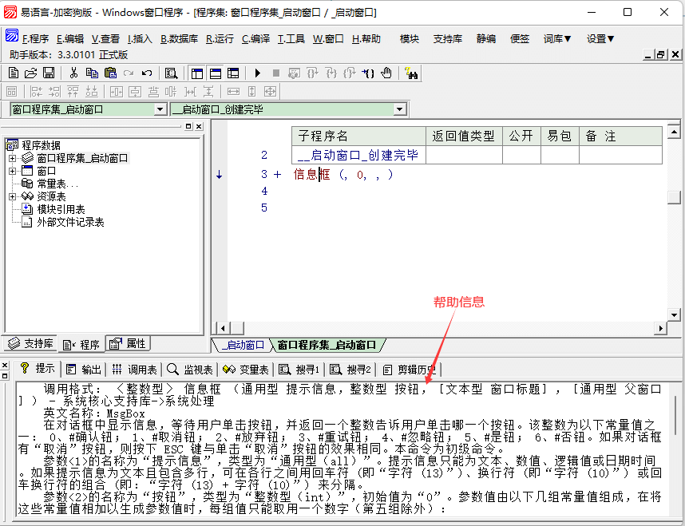
在火山中同样也可以通过F1打开及时帮助，相比于易语言进行了升级，除了支持在输出栏显示方法参数信息外，额外新增了“帮助页”，可用于查看类、方法、变量、常量等数据的帮助信息。
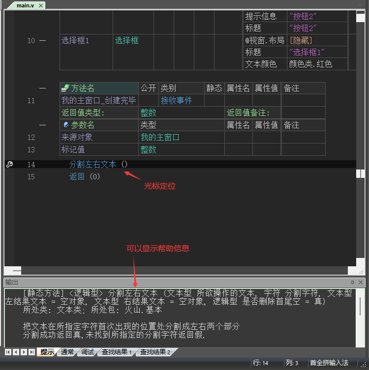
帮助页效果如下，相比易语言简陋的帮助提示，火山的即时帮助信息更加详细。
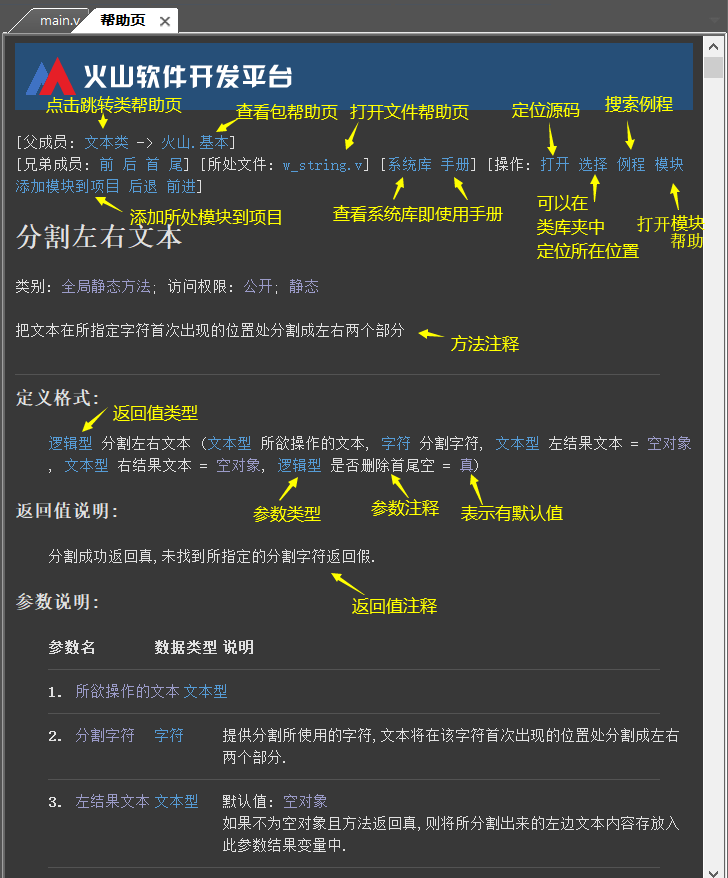
1.2 帮助页常用功能
如下图为方法帮助页的效果，其它类型的帮助页效果大同小异，只是所显示的数据不同。
下面介绍类库帮助页中最常用的几个功能：
(1) 打开
本功能用于定位源代码，便于在一些方法存在问题时方便自己修改。
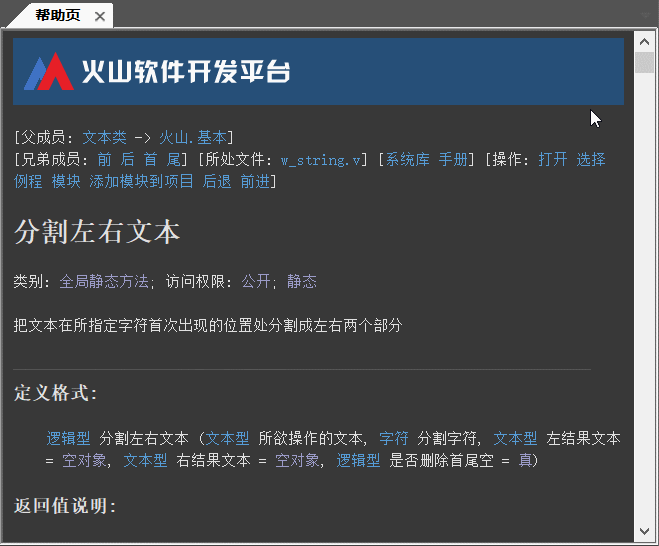
(2) 选择
用于在类库夹中定位所处位置。
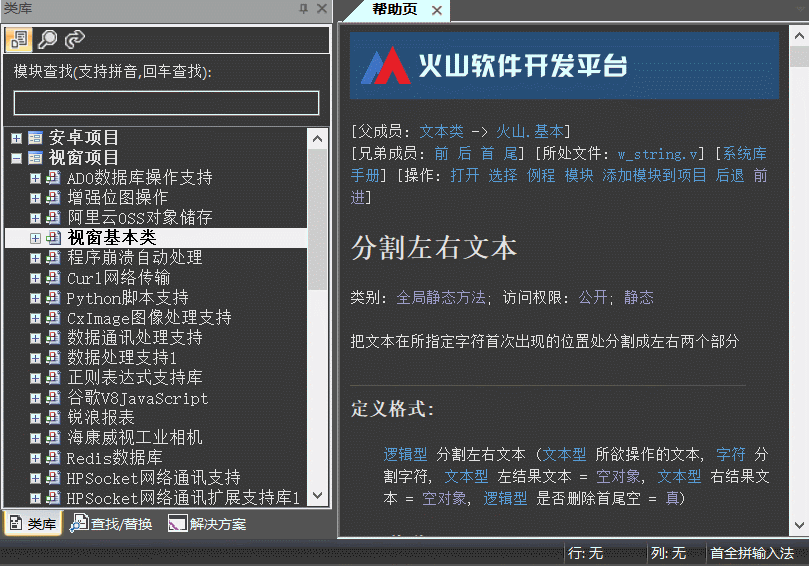
(3) 例程
用于在火山系统例程库中搜索当前方法是否有对应案例，如果有将会打开“例程查找结果”窗口。
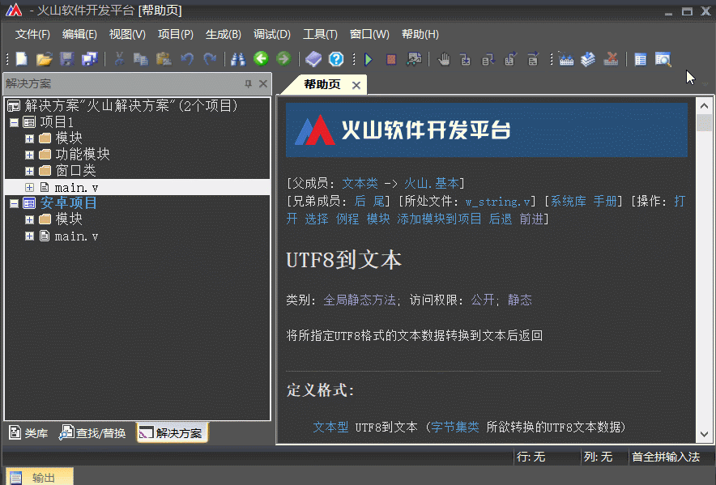
(4) 添加模块到项目
用于配置当前类/方法/变量/常量等数据所处的模块添加到当前活动项目中。
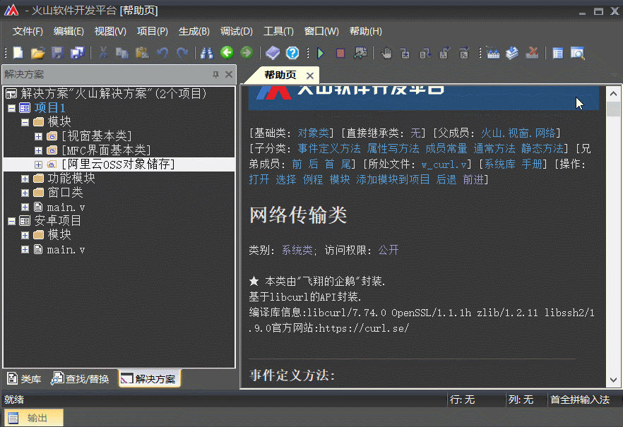
类库帮助页有以下打开方式：
(1) 类库夹中首次打开需要双击，随后可单击进行切换。
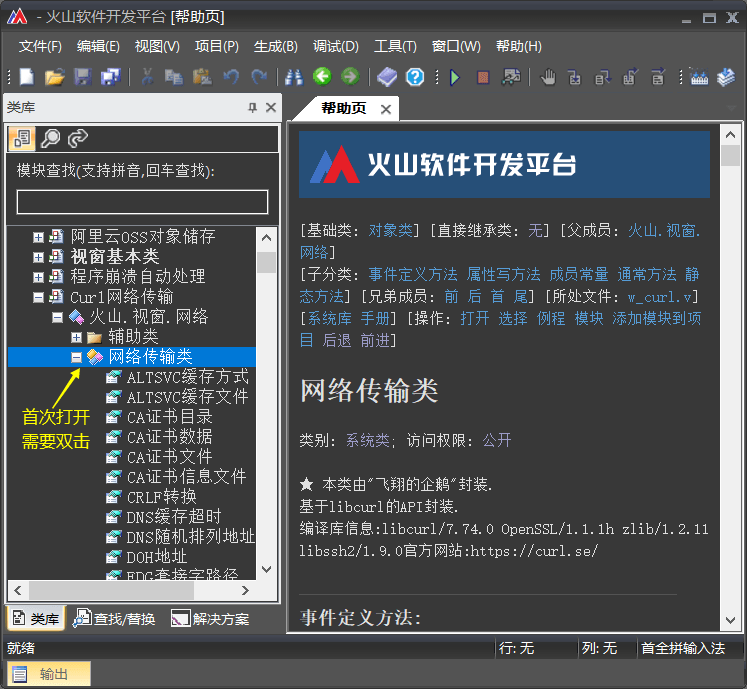
(2) 利用类库搜索打开
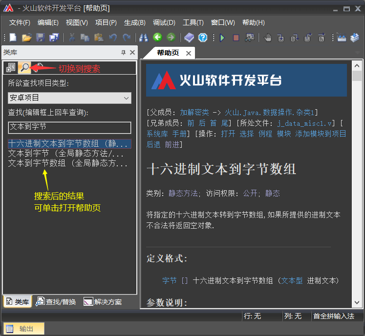
(3) 光标定位关键词，使用快捷键F1打开，部分电脑可能需要Fn + F1。
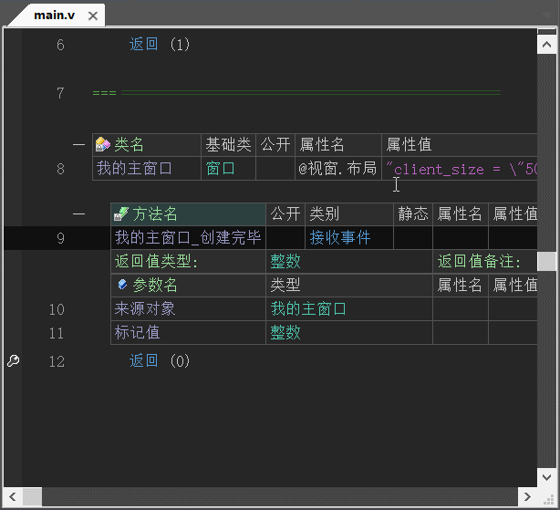
1.3 项目帮助
易语言中如果是当前程序想要查看一些帮助信息，只能通过鼠标的悬浮提示来实现。
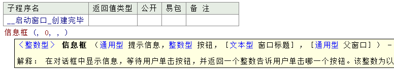
火山中提供了完整的程序结构查看，可通过右键项目选择“查看程序结构”或使用快捷键“Shift + F1”即可打开当前项目的帮助窗口。
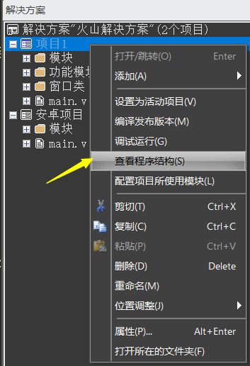
项目帮助窗口效果如下图：
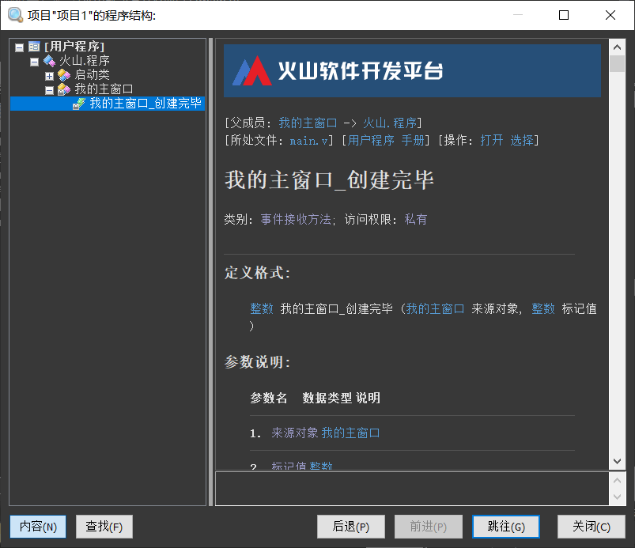
2、参数提示差异
在易语言中当前行代码被预编译后会直接显示所有参数。
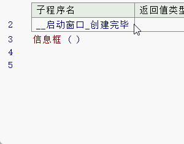
点击方法旁边的加号可以展开所有参数提示。
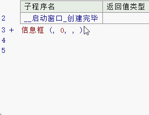
在火山中，使用“Ctrl + Shift + Enter”进行预编译代码后，并不会自动补全所有参数，可通过“工具->选项”菜单打开系统设置后，选择“火山程序管理器->全局”将“自动补全参数表”设置为真即可。
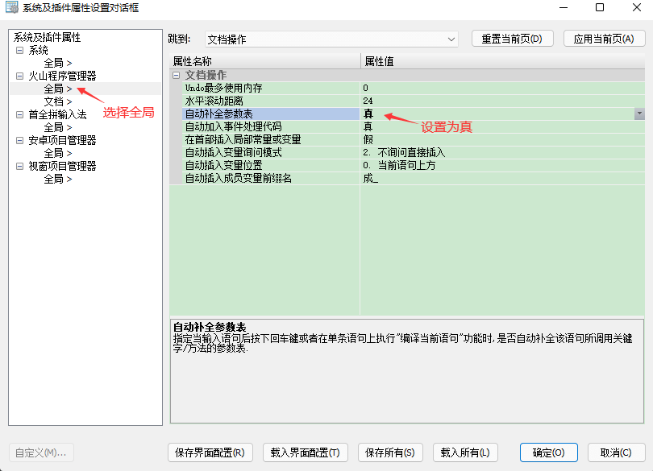
火山参数补全演示：
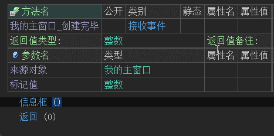
在火山中，点击方法旁边的加号可以展开所有参数提示，不同之处为火山还可以对展开的参数进行删除，删除后对应的参数提示也不再显示。
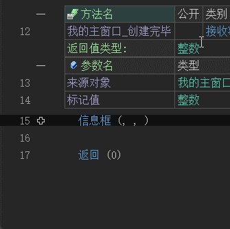
除此之外，在火山中输入参数分隔符时，也可以进行参数提示，这是易语言无法办到的。
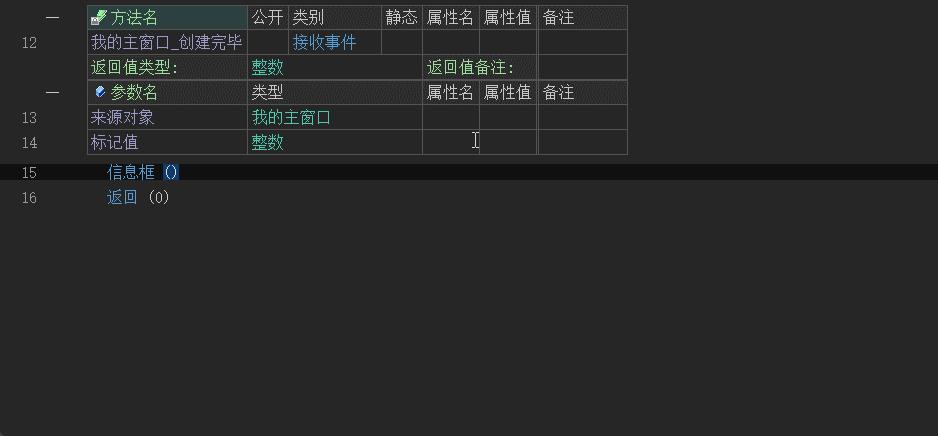
3、书签差异
易语言书签位于“查看”菜单中。
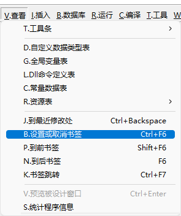
火山的书签功能位于“编辑 -> 书签”菜单中。
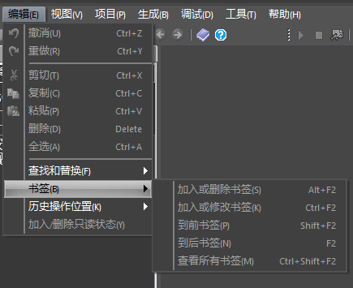
快捷键差异如下：
易语言 火山 设置或取消书签（Ctrl + F6） 加入或删除书签（Alt + F2） 到前书签（Shift + F6） 到前书签（Shift + F2） 到后书签（F6） 到后书签（F2） 书签跳转（Ctrl + F7） 查看所有书签（Ctrl + Shift + F2） 无 加入或修改书签（Ctrl + F2）
4、例程打开方式差异
易语言例程位于“程序 -> 新建”菜单中。
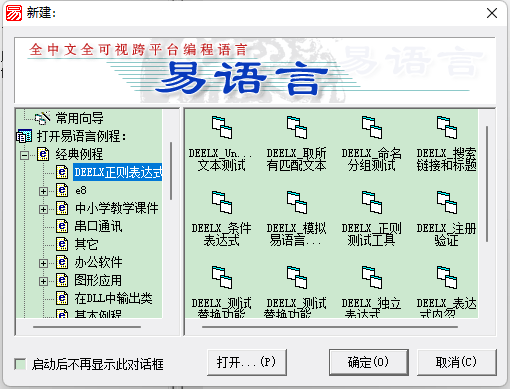
火山例程位于“文件 -> 打开 -> 样例解决方案”菜单中。
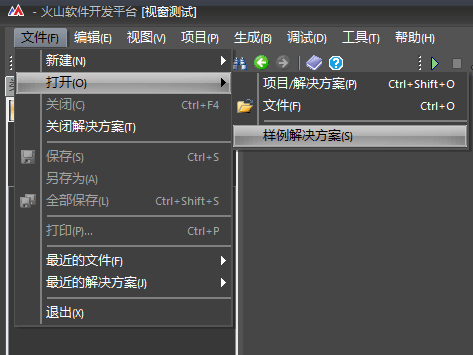
如果存在多个平台，会进行提示，选择视窗项目点击确定即可。
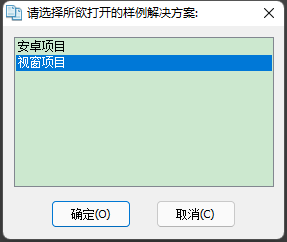
点击解决方案就可以看到火山自带例程。
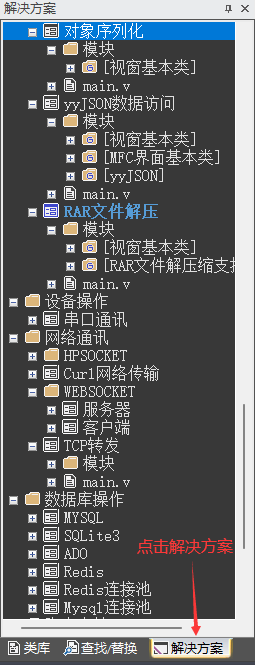